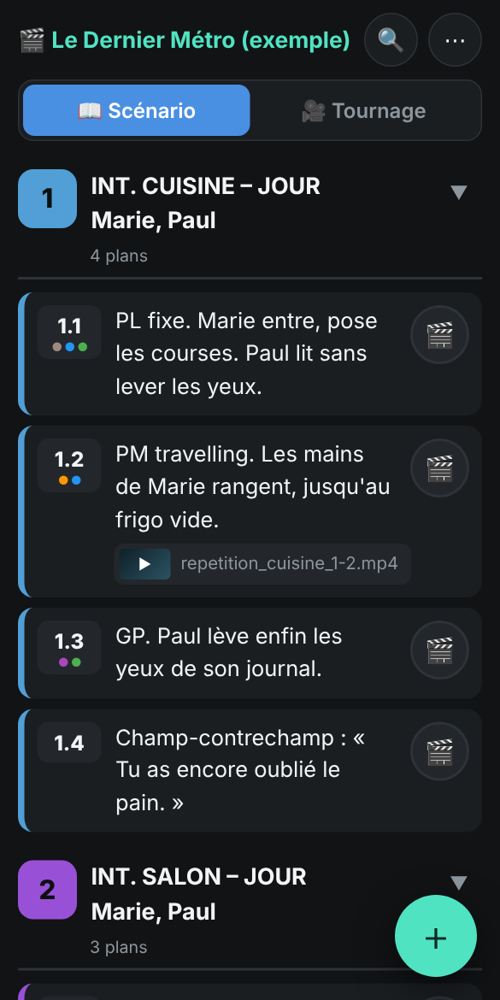
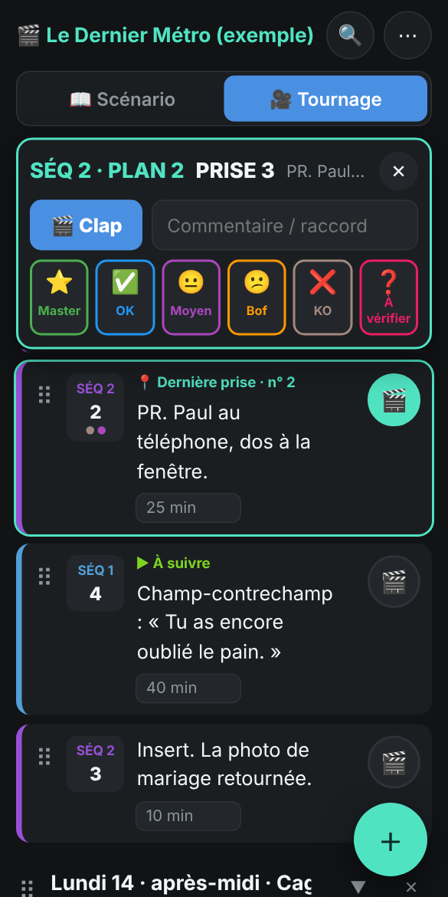
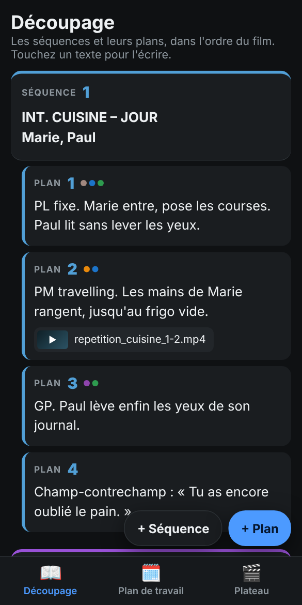
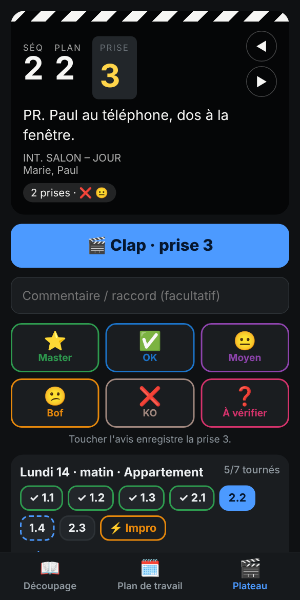
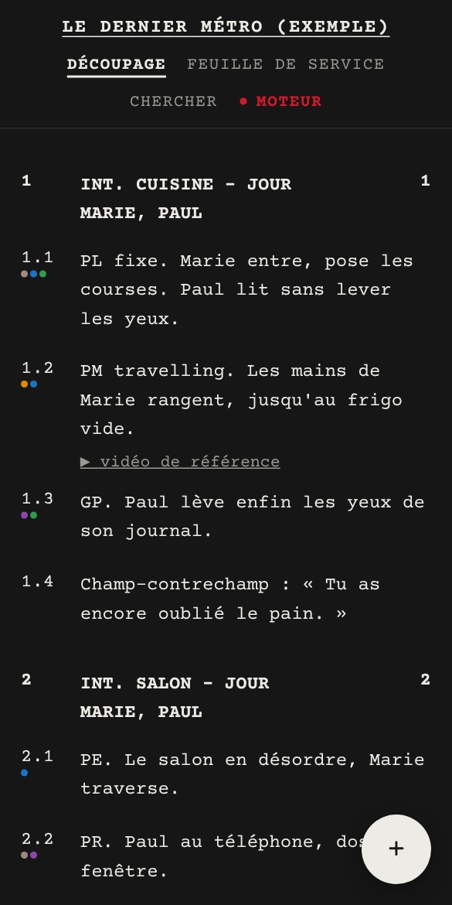
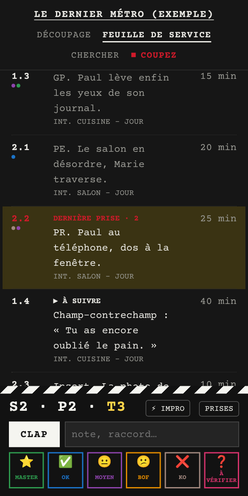

Le but : qu'une personne qui découvre l'app comprenne tout de suite quoi toucher. Les trois propositions font la même chose, avec les mêmes données et les mêmes règles. Seule la manière de le présenter change. Toutes se manipulent sur téléphone comme sur ordinateur.
Ce que j'ai retiré partout, et pourquoi
Deux niveaux de boutons de mode (Préparation/Tournage, puis Découpage/Plan de travail…). Quatre combinaisons, c'est trop pour une première fois.
Les cadres de saisie partout. Le texte s'affiche comme du texte et devient modifiable au toucher. Il redevient l'élément principal.
Les boutons ✎ 🎞️ ❌ sur chaque plan. Ils passent dans un menu qu'on ouvre en touchant le numéro du plan.
Les boutons PDF permanents. Ils servent deux fois par tournage : ils vont dans un menu.
Les boutons flottants à glisser. Gardés, mais un simple appui ajoute aussi l'élément à la fin et rappelle le geste. Un nouveau venu y arrive, et vous gardez le glisser.
La règle des numéros reste la même : plans toujours 1, 2, 3…, séquences avec trous permis, prises jamais renumérotées.
PROPOSITION A
Une seule liste
Il n'y a plus de mode. Une liste unique se trie « Scénario » ou « Tournage ». Pour tourner un plan, on touche son 🎬 : la barre de clap apparaît en haut.

Scénario

Tournage, plan armé
Le pari
Supprimer la notion de mode. La scripte n'« entre » pas en tournage : elle arme un plan.
Pourquoi
Une seule chose à apprendre : la liste. Chaque plan est le même composant partout (numéro, texte, 🎬), avec la même couleur de séquence dans les deux ordres. On reconnaît un plan d'un coup d'œil. Un seul bouton « + » : il crée une séquence, un plan ou une journée selon l'endroit où on le lâche, et le trait annonce ce qui va être créé.
Ce qu'on y perd
Le texte reste modifiable même au plateau. Sans mode, on peut changer un texte par erreur, mais One App sait revenir en arrière.
Des onglets en bas, comme dans une app de téléphone : Découpage, Plan de travail, Plateau. Chaque écran a un seul métier et le dit en une phrase.

Découpage

Plateau
Le pari
Au plateau, la liste disparaît. On ne voit que le plan en cours, en grand, comme sur une claquette. On passe au suivant avec ◀ ▶ ou avec les pastilles de la journée.
Pourquoi
C'est le modèle que tout le monde connaît déjà sur téléphone. Les actions d'un plan (numéro, vidéo, supprimer) n'apparaissent que quand on écrit dedans. Dans le plan de travail, on ne voit qu'une journée à la fois : on glisse un plan sur la pastille d'une autre journée pour l'y envoyer. Au plateau, les boutons d'avis sont grands, et « Où en est-on dans l'histoire ? » ouvre le scénario sur le plan en cours.
Ce qu'on y perd
Moins de vue d'ensemble au plateau, et trois endroits différents pour retrouver un plan.
La mise en page d'un scénario de tournage : police Courier, numéros dans les marges, aucune carte ni cadre. « Moteur » lance le tournage, « Coupez » l'arrête.

Découpage

Moteur !
Le pari
Pas d'interface, seulement de la typographie. La claquette du tournage est en bas de l'écran, sous le pouce, et non en haut.
Pourquoi
Toute l'équipe sait déjà lire cette page : c'est celle qu'elle a dans les mains depuis la préparation. Le vocabulaire est celui du plateau (feuille de service, moteur, coupez). En bas, la claquette se manipule d'une main et n'entre pas en conflit avec la barre de One App en haut. Le numéro du plan sert de poignée : toucher ouvre le menu, glisser déplace le plan.
Ce qu'on y perd
Moins de couleur pour se repérer, et un style très marqué qui peut plaire ou non.
Évident pour l'équipe film, déroutant pour les autres
Risque
Pas de mode tournage
Liste cachée au plateau
Style marqué, clap en bas
Mon avis
A est la plus proche de ce qui vous plaît déjà (le mode scénario), avec le moins de choses à apprendre. B est la plus rassurante pour quelqu'un qui n'a jamais vu l'app. C est la plus audacieuse et la plus « cinéma ».
On peut aussi mélanger les idées : la liste unique de A, le plateau plein écran de B quand on arme un plan, et le vocabulaire et la typographie de C. Les trois fonctionnent sur le même moteur : combiner coûte peu.